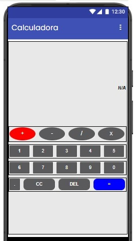
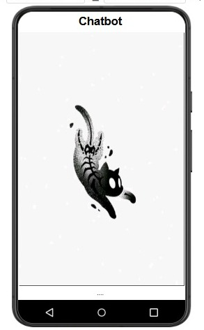
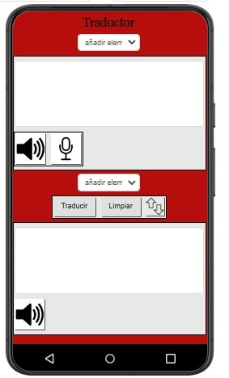
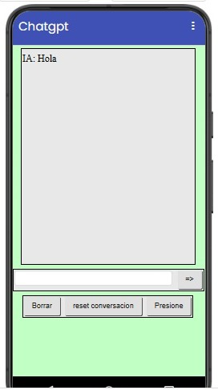

App Inventor
App Inventor es una plataforma gratuita creada por MIT que permite diseñar aplicaciones para Android usando bloques visuales, sin necesidad de programar con código tradicional.
Calculadora
Creé una calculadora básica en App Inventor que permite realizar operaciones como suma, resta, multiplicación y división. Para su funcionamiento utilicé bloques visuales que procesan los números ingresados y muestran el resultado en pantalla de manera interactiva.
Bot
Creé un bot de respuestas programadas en App Inventor. Este bot no era inteligente ni pensante, sino que respondía únicamente las preguntas que yo le programé previamente.

Bot avanzado
Desarrolle un bot que parecía más avanzado, pero tampoco era pensante, Este bot funcionaba con un código en Google Apps Script, que recibía la pregunta del usuario, la convertía a minúsculas y luego buscaba en una hoja de cálculo si había alguna palabra clave relacionada.
Traductor
También desarrollé un traductor en App Inventor, el cual permitía al usuario escribir una palabra o frase y obtener su traducción a otro idioma.
Traductor
Desarrollé un bot con inteligencia artificial utilizando Gemini, capaz de generar respuestas nuevas basadas en la pregunta del usuario.
